UXPORTFOLIO
UX 개선
매물을 믿고, 망설임 없이 중개사에게 연락하기까지
- DESIGNER
- 문건호
- ROLE
- UX·UI Designer (1인)
- TOOL
- Figma · HTML · Claude
- PERIOD
- MAY – JUL 2026
23명 응답 중 스크리닝 통과
사진을 믿기 어려움
각 13명 중 8명
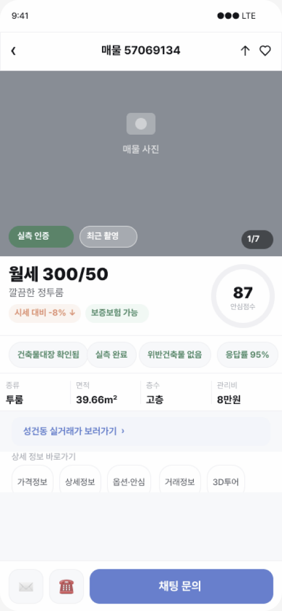
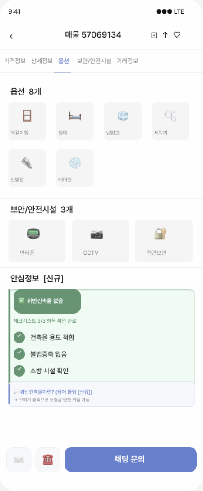
(PORTFOLIO)
2026
UX
PORTFOLIO
DABANG
다방 원룸 탐색
UX 개선
매물을 믿고, 망설임 없이 중개사에게 연락하기까지
13명
설문 유효 응답
23명 응답 중 스크리닝 통과
76.9%
설문(n=13) 불편 1위
사진을 믿기 어려움
61.5%
위반건축물 불안 · 헛걸음
각 13명 중 8명
DESIGNER
문건호
ROLE
UX·UI Designer (1인)
TOOL
Figma · HTML · Claude
PERIOD
MAY – JUL 2026
UX PORTFOLIO — DABANG — 문건호
PROJECT OVERVIEW
OVERVIEW.
이 프로젝트는 무엇이고,
어디까지 확인했나
성격
개인 리디자인 프로젝트. 다방과 무관한 비공식 UX 개선안이며, 다방 앱을 직접 사용하며 분석했다.
역할
설문 설계·분석 · 문제 정의 · UX/UI 설계 · HTML 프로토타입 제작 · 배포까지 단독 수행
기간
2026.05 ~ 2026.07 (프로토타입 최초 배포 2026.06.29)
현재 검증 상태
설문 유효 응답 13명으로 우선순위를 조정했고, 수정 시안의 사용성 테스트는 아직 하지 않았다.
UX PORTFOLIO — DABANG — 문건호
01 · TOPIC
TOPIC.
매물이 적고, 사진은 믿기 어렵고, 불법건축물인지 알 수 없었다. 연락하기도 전에 포기하게 되는 이 구조가 다방의 핵심 문제일 것이라는 가설에서 출발해, 설문으로 우선순위를 조정한 프로젝트.
다방에서 원룸을 구하다,
세 가지 벽에 부딪혔다
01
매물이 적다
예산 범위 안에서 찾을 수 있는 원룸이 너무 적어 선택지 자체가 좁다
02
사진을 믿기 어렵다
광각·보정으로 실제보다 넓고 밝게 보이는 사진 — 방문해 보면 실망한다
03
불법건축물인지 알 수 없다
싼 방이 위반건축물인지 확인할 방법이 없어 마음에 들어도 연락을 포기한다
프로젝트 목적
다방에서 원룸을 탐색할 때, 매물 정보를 충분히 신뢰한 상태에서
중개사에게 망설임 없이 연락하는 것
개선 영역
01
매물 정보 신뢰도 강화
사진 출처·검증 상태·제공 범위, 서류 확인 상태(확인 주체·일자·범위), 가격 변동 이력을 상세에서 제공 — 연락 전에 스스로 판단
02
탐색·필터 정밀도 향상
서류 확인 상태 필터, 지역별 실시간 매물 수, 주변 시세 대비 가격 인디케이터로 원하는 매물을 더 빠르게
03
중개사 신뢰 시각화
응답률·평균 응답 시간 노출, 인앱 채팅과 질문 템플릿(가정)으로 첫 연락의 심리적 장벽 낮추기
핵심 KPI · 상세 진입자 중 첫 문의를 실제 전송한 사용자 비율. 유저 경험 개선과 비즈니스 임팩트가 같은 방향을 가리키는 지점에서 설계
NEXT
→ 02 고객 조사: 누가, 왜 연락을 포기하는지로 나눠 본다.
UX PORTFOLIO — DABANG — 문건호
02 · USERS
USERS.
나이·직업이 아니라 이용 경험·탐색 상황·연락 장벽(행동)을 기준으로 4개 유형으로 나눴다(조사 전 가설). 주 타깃은 "안전 확인 탐색형"과 "시간 절약 탐색형"이다.
TYPE 01
앱 미사용 탐색형
탐색 방식 · 발품·지인 의존
대학교 입학 첫 자취 준비생
부동산 앱을 모르거나 발품으로 방을 구하는 사람. 앱 자체를 모름 → 마케팅 영역
TYPE 02
MAIN TARGET
안전 확인 탐색형
탐색 방식 · 다방·피터팬 비교
취준생 · 안전 정보를 확인하기 어려운 탐색자
다방·피터팬 동시 사용. 싼 방이 안전한지 불안해 연락을 포기한다
TYPE 03
MAIN TARGET
시간 절약 탐색형
탐색 방식 · 다방·직방 비교, 짧은 시간에 판단
사회초년생 · 짧은 시간에 실제 상태를 판단하려는 탐색자
다방·직방 동시 사용. 시간 낭비가 두려워 연락을 포기한다
TYPE 04
반복 이용형
탐색 방식 · 이사 시즌마다 다방부터 확인
이전 이용 경험으로 앱을 고르는 사용자
이사 시즌마다 다방부터 연다. 허위매물에 한 번 걸리면 바로 직방으로 이동
PERSONA
가설 기반 · 조사 전 작성
이
이지은
24세 · 여성 · 취업 준비 중 · 지방 → 서울 상경 예정
예산
보증금 1000 / 월세 60만원 이하
사용 앱
다방 · 피터팬 동시 사용
이사 이유
취업 준비를 위한 서울 상경
목표
저렴하면서도 위반 여부 등 확인할 정보가 충분한 원룸을 찾아, 안심하고 중개사에게 연락하고 싶다.
행동 패턴 (가정 · 조사 전 작성)
• 비교 탐색에 시간을 들인다
• 다방과 피터팬을 동시에 열어 같은 조건으로 비교한다
• 싼 매물일수록 숨겨진 문제가 있을지 의심한다
PAIN POINT
확인할 방법이 없어서 결국 연락을 포기하고 다른 매물을 찾는다.
막히는 플로우 Step 03 필터 · Step 06 안심 정보 — 확인 방법 없음
→ 전세보증보험 필터, 서류 확인 상태·용어 툴팁·방문 전 확인 항목
박
박민준
27세 · 남성 · 직장인 1년차 · 서울 고시원 거주 중
예산
보증금 500 / 월세 40만원 이하
사용 앱
다방 · 직방 동시 사용
이사 이유
첫 월급으로 제대로 된 방으로 이사
목표
사진이 실제와 같고 연락하면 바로 응답해주는 믿을 수 있는 매물을 빠르게 찾고 싶다.
행동 패턴 (가정 · 조사 전 작성)
• 짧은 시간에 빠르게 탐색한다
• 직장 근처 교통 중심으로 필터를 설정한다
• 사진이 예쁜 매물이 끌리지만 실제와 다를까 망설인다
PAIN POINT
광각 사진을 믿고 방문했다가 실망한 경험 — 한 번의 헛걸음도 아깝다.
막히는 플로우 Step 05 매물 상세 · Step 07 중개사 확인 — 사진 신뢰 불가, 응답 여부 모름
→ 사진 출처·검증 상태, 서류 확인 상태, 응답률·응답 시간, 인앱 채팅 강화
NEXT
→ 03 설문 결과: 나눈 유형에서 나온 문제 가정을 설문으로 확인한다.
UX PORTFOLIO — DABANG — 문건호
03 · SURVEY
SURVEY.
스크리닝(최근 원룸 탐색 경험자)을 통과한 13명을 유효 응답으로 분석(23명 응답, 통과율 57%). 소규모 표본이라 방향성 근거로만 쓴다.
23
총 응답
13
유효 응답
57%
스크리닝 통과율
100%
연락 포기 경험률
Q15
가장 불편했던 점 — 불편 순위 확인 (복수 응답, n=13)
1
사진만 보고 실제 상태를 믿기 어려웠다
76.9%
10명 · PP 매물 신뢰
2
법적으로 문제없는지 확인할 방법이 없었다
61.5%
8명 · PP 위반건축물
3
중개사에게 연락하기가 부담스러웠다
30.8%
4명 · 연락 허들
4
원하는 조건으로 매물 걸러내기 어려웠다
23.1%
3명 · PP 탐색 효율
5
중개사 응답이 없거나 늦었다
7.7%
1명 · 연락 후 문제
설문 결과 요약
Q9 사진 신뢰도 평균
2.77
/ 5.0
5점 응답 0명
평균 점수
Q10 헛걸음 경험 (1회 이상)
61.5%
8명
사진·설명과 달라 허탕
표본 내 다수
Q11 위반건축물 불안 경험
61.5%
8명
자주 + 가끔 합산
표본 내 다수
Q12 중개사에게 직접 문의 (우회)
46.2%
6명
방법 모름 30.8%
신규 발견
Q8 시세 비교 필터 수요 1위
69.2%
9명
라이프스타일 필터는 23%
신규 발견
Q8 전세보증보험 필터 수요 2위
53.8%
7명
탐색 단계에서 확인된 정보로 1차 선별
표본 내 과반
Q13 인앱 채팅 선호
46.2%
6명
전화 선택 7.7% · 1명
표본 내 다수
Q7 탐색 어려움 평균
3.08
/ 5.0
다른 PP 대비 체감 낮음
평균 점수
Q14 중개사 무응답 경험
38.5%
5명
Q6 선택 0명 — 이번 표본에서 근거 부족
후순위 조정
NEXT
→ 04 판단의 변화: 설문 결과가 초기 생각을 어떻게 바꿨는지 한 표로 정리한다.
UX PORTFOLIO — DABANG — 문건호
04 · WHAT CHANGED
WHAT CHANGED.
초기 생각 → 설문 근거 → 바뀐 판단 → 설계를 한 표로 정리했다. 설문은 n=13 표본이라 방향성 근거로만 쓴다.
주제
초기 생각
설문 근거 (n=13)
바뀐 판단
설계
매물 정보 신뢰
3개 Pain Point 중 하나. 탐색 효율이 먼저
불편 1위 76.9%(10/13) · 사진 신뢰도 평균 2.77/5 · 헛걸음 경험 61.5%(8/13)
1순위 핵심 문제로 상향
사진 출처·검증 상태·제공 범위를 구분해 표시
위반건축물·안심 정보
확인할 방법이 없어 연락을 포기한다
불편 2위 61.5%(8/13) · 중개사에게 직접 문의 46.2%(6/13) · 방법 모름 30.8%(4/13)
우회하던 확인을 앱 안으로 옮기되, 안전을 보증하지 않고 확인 상태·범위를 보여준다
서류 확인 상태(주체·일자·범위) + 방문 전 확인·문의 항목
탐색 효율
라이프스타일 필터로 탐색 완료율을 높인다 (1순위)
불편 4위 23.1%(3/13) · 탐색 어려움 평균 3.08/5 · 시세 비교 수요 69.2%(9/13) · 보증보험 필터 53.8%(7/13)
3순위로 하향. 필터는 시세 비교·보증보험 중심으로
서류 확인 필터 · 시세 비교 인디케이터
연락 방식
인앱 채팅은 보조 수단
인앱 채팅 선택 46.2%(6/13) · 전화 선택 7.7%(1/13) · 전화 부담 46.2%(Q6)
채팅을 기본 연락 수단으로 격상. 첫 문의 작성 부담은 가정으로 둠
채팅 CTA 우선 + 질문 템플릿(가정) · 전화는 보조 아이콘
중개사 응답
응답률·활동 이력이 연락 포기의 원인
Q6에서 선택 0명. 무응답 경험은 있으나(Q14 38.5%) 포기 이유로는 나타나지 않음
이번 표본에서 근거 부족 → 후순위
응답률은 보조 정보로 노출
설계 원칙
매물 수 부족은 UX로 풀 수 없는 공급 문제라 "있는 매물 안에서 원하는 것을 찾는 과정"에 집중한다. 위반건축물은 서류로 모두 확인되지 않으므로(적발된 사항만 대장에 기록) "걸러내기"가 아니라 "유저가 확인 범위를 알고 스스로 판단하도록 돕기"를 목표로 한다. 효과는 06의 사용성 테스트로 확인한다.
NEXT
→ 05 사용자 시나리오: 바뀐 판단을 흐름 속 핵심 확인 구간에 배치한다.
UX PORTFOLIO — DABANG — 문건호
05 · SCENARIO
SCENARIO.
홈에서 중개사 연락까지의 흐름. 단계를 묶어 이름을 줄이고 핵심 확인 구간을 중심으로 재구성했다. 클릭 수·완료 시간 감소는 아직 측정 전이다.
V1 — 8 STAGES (가설 기반)
Step 01
앱 진입 · 거래 유형
제외
Step 02
지역 설정
제외
Step 03
필터 설정
개선
Step 04
매물 리스트 탐색
개선
Step 05
매물 상세 확인
개선
Step 06
안심 정보 확인
핵심
Step 07
중개사 신뢰 확인
개선
Step 08
중개사 연락
목적
설문 결과 반영 (Q7 · Q8 · Q10 · Q12 · Q13 · Q15)
V2 — 6 STAGES (설문 결과 반영)
STAGE 01
앱 진입 · 거래 유형
변경 없음
현재 구조에서 문제가 크지 않아 개선 범위에서 제외.
STAGE 02
지역 · 필터 설정
필터 재조정
라이프스타일 필터 중심에서 시세 대비 가격 비교(69.2%)·전세보증보험(53.8%) 필터 중심으로.
STAGE 03
매물 리스트 · 상세
최우선 개선
불편 1위 76.9%(표본) 구간. 사진 출처·검증 상태, 서류 확인 상태, 허위매물 신고 접근성↑.
STAGE 04
안심 정보 확인
NEW 핵심 구간
우회하던 확인 행동(46.2%)을 앱 안으로. 서류 확인 상태·[?] 툴팁·방문 전 확인·문의 항목.
STAGE 05
중개사 신뢰 확인
우선순위 하향
Q6 0명으로 이번 표본에서 우선 근거가 부족해 후순위로 조정. 응답률·활동 이력은 보조 참고 정보로.
STAGE 06
중개사 연락
채팅 격상
전화 선택 7.7%(n=13). 인앱 채팅을 화면 최상단 기본 수단으로, 전화는 보조 옵션으로 하향.
Step 04 안심 정보 — 방문 전 확인·문의 항목 & 용어 툴팁
법적 판단이 아닌 확인 안내
건물 외벽 덧붙인 구조물
외관이 도면·사진과 다른지 확인해 보세요
외관 사진 · 방문 시 육안
옥상 옥탑방 여부
옥탑 구조가 서류에 있는지 중개사에게 문의하세요
외관 사진 · 방문 시 육안
계량기 수 확인
세대 수와 계량기 수가 다르면 중개사에게 문의하세요
방문 시 직접 확인
건축물대장 도면과 실제 구조
도면과 다르면 중개사에게 확인을 요청하세요
정부24 + 방문 시 비교
전세보증보험 가입 가능 여부
가입 가능 여부는 보증기관 조회와 중개사 확인이 필요해요
중개사에게 문의 · 법적 판단은 공식 서류 확인 후
NEXT
→ 06 검증 계획 & KPI: 효과는 아직 모르므로 무엇을 어떻게 확인할지 먼저 정한다.
UX PORTFOLIO — DABANG — 문건호
06 · VERIFY & KPI
HOW TO
VERIFY.
지금 실행할 사용성 테스트(검증 계획)와 운영 데이터가 있을 때 측정할 KPI를 분리했다. 아직 테스트 전이라 효과는 확인되지 않았다. 목표치는 근거가 없어 사전 측정 후 설정한다.
USABILITY TESTS · 검증 계획 (아직 미실시)
① 확인·미확인 상태 이해
과제
수정 시안 안심 정보 화면을 본 뒤 "무엇이 확인됐고 무엇이 아직 모르는 상태인지"를 말로 설명하게 한다.
성공 기준 (잠정)
참가자 대부분이 확인·미확인 항목을 구분해 설명 (예: 5명 중 4명 이상 — 잠정, 파일럿 후 조정)
실패 시 수정 방향
상태 칩 문구·색과 확인 범위 문구를 단순화하고 항목 수를 줄인다.
② 과신 여부
과제
"위반건축물 기록 없음"을 본 뒤 이 매물이 안전하다고 생각하는지 묻고, 추가로 확인할 것을 말하게 한다.
성공 기준 (잠정)
"기록 없음 = 안전 보장"으로 받아들이는 참가자가 소수 (예: 5명 중 1명 이하 — 잠정)
실패 시 수정 방향
확인 범위 안내를 상단으로 올리고 "기록 없음"을 "대장 기재 없음"으로 바꾼다.
③ 문의 작성 완료·시간
과제
1차 시안·수정 시안에서 같은 과제(관심 매물에 첫 문의 보내기)를 순서를 바꿔 수행하고 완료 여부·작성 시간을 기록한다.
성공 기준 (잠정)
수정 시안에서 완료율이 낮아지지 않고 작성 시간이 같거나 짧음 (기준 수치는 파일럿 후 설정)
실패 시 수정 방향
템플릿 수·문구를 조정하고 선택 후 편집 동선을 개선한다.
운영 KPI · 핵심 + 보조(정량)
ID
지표
측정 내용
BASELINE → TO-BE
측정 방법
K1
첫 문의 전송 비율
상세 진입 유저 중 첫 문의를 실제 전송한 비율. 채팅은 메시지 전송 완료, 전화는 통화 연결 성립 시 계산(전화 버튼 클릭·상담 완료는 별도 이벤트로 기록해 제외). 프로토타입 시도는 제외
기준값 사전 측정 후 목표 설정
문의 전송 이벤트 트래킹. 1차 시안·수정 시안 동일 과제 비교 후, 서비스 전환율은 운영 데이터 접근 시 별도 측정
K5
안심 정보 확인 후 문의 전환율
안심 정보 단계에 진입한 유저 중 이후 첫 문의(K1 기준)를 보낸 비율. 정보 확인 자체의 완료율과는 구분
사전 측정 후 목표 설정
안심 정보 진입 → 첫 문의 전송 퍼널 분석
운영 KPI · 보조(정성)
ID
지표
측정 내용
BASELINE → TO-BE
측정 방법
K7
화면 정보 신뢰도(체감)
화면에 표시된 정보(사진 출처·서류 확인 상태)를 믿고 판단할 수 있다고 느끼는 정도(5점). 실제 방과 사진의 일치 여부는 현장 방문 없이 확인할 수 없어 측정하지 않음
사전 측정 후 목표 설정 (설문 Q9 사진 신뢰도 2.77점은 다른 문항이라 참고만)
사용성 테스트에서 1차 시안·수정 시안 동일 과제 후 5점 척도로 측정
합격 판정 룰
필수 합격
K1 첫 문의 전송 비율이 사전 측정 기준값보다 개선 (목표치는 사전 측정 후 설정)
권장 합격
보조 지표 K5 · K7 중 1개 이상 개선. 부록 지표는 참고로 해석
최종 판정
K1 개선 + 보조 지표 1개 이상 개선 시 To-Be 채택 검토. 기준치는 사전 측정 후 설정
측정 시점
지금은 사용성 테스트, 운영 KPI는 운영 데이터 접근 시 측정. 측정 기간은 트래픽 확인 후 설정
부록 · 참고 지표 (운영 시 측정)
ID
지표
측정 내용
BASELINE → TO-BE
측정 방법
K3
채팅 CTA 클릭 비중
채팅·전화 연락 CTA 클릭 중 채팅 클릭의 비율. 실제 문의 전송 비율과는 별개
사전 측정 후 목표 설정
채팅 클릭 ÷ (채팅 + 전화 클릭) × 100
K4
헛걸음률
연락 후 방문했으나 사진·설명과 달라 돌아온 비율(방문 건 기준). 설문의 "헛걸음 경험자 비율(사람 기준) 61.5%"와 분모가 달라 직접 비교하지 않음
기준값 사전 측정 후 목표 설정
방문 후 미계약 유저 대상 인앱 피드백 수집
K6
7일 재방문율
첫 방문 후 7일 이내 앱을 다시 열어 탐색을 재개한 비율
사전 측정 후 목표 설정
코호트 분석으로 개선 전후 비교
K8
위반건축물 불안 감소
방을 구하며 위반건축물 불안을 느낀 경험률
설문 61.5%(8/13) → 사전 측정 후 목표 설정
Q11 재배포, "자주 + 가끔" 합산 비교
K9
SEQ (탐색 용이성)
원하는 조건의 매물을 찾는 과정의 쉬움·어려움 체감 점수
설문 3.08점 → 사전 측정 후 목표 설정
Q7 동일 문항 재측정 (높을수록 어려움)
K10
연락 방식 만족도
인앱 채팅 연락 방식의 편의성 체감 점수(5점 척도)
기준값 사전 측정 후 목표 설정
사전 측정 후 동일 척도로 사후 비교
NEXT
→ 07 대표 장면: 1차 시안에서 수정 시안으로 — 판단이 화면을 어떻게 바꿨는지 세 장면으로 본다.
UX PORTFOLIO — DABANG — 문건호
07 · KEY SCENE 01
SCENE 01
사진 신뢰
1차 시안 → 수정 시안
왜 바꿨나 — 배지가 아니라 판단 근거를 보여줘야, 유저가 스스로 판단한다.
1차 시안의 문제
"실측 인증" 배지만 있고 누가·언제·어디까지 확인했는지 알 수 없다. 사진은 중개사가 제출한 자료인데 확인된 것처럼 읽힌다.
조사 근거
불편 1위 76.9%(10/13) · 사진 신뢰도 2.77/5 · 헛걸음 61.5%(8/13). 소규모 표본(n=13)의 응답.
수정 화면
"실측" 표현을 쓰지 않고 "제출된 사진"으로 표기한다. 제출자 / 검증 상태 / 제공 사진 범위를 나눠 보여주고, 추가 확인이 필요한 부분을 함께 표시.
검증할 내용
동일 과제(방 상태 판단)에서 1차 시안·수정 시안의 판단 근거 이해도·과신 여부 비교. 사용성 테스트 예정.
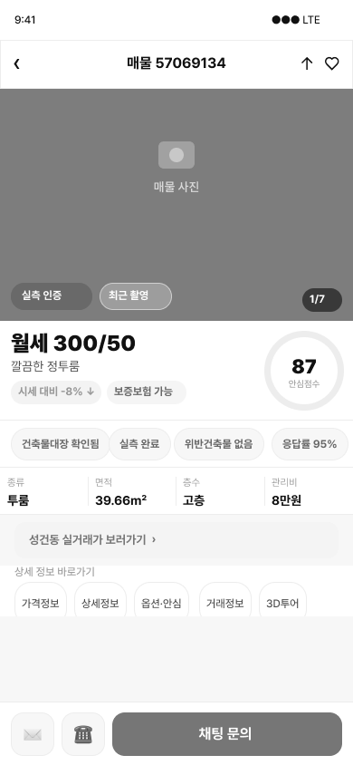
9:41
변경 영역 발췌 · 예시 데이터
‹
매물 57069134
가격정보
상세정보
옵션
안심정보
거래정보
제출된 사진 · 다방 검증 전
월세 300/50
깔끔한 정투룸 · 39.66㎡ · 고층 · 관리비 8만원
사진 확인 정보
제출자
중개사 (용공인중개사사무소)
검증 상태
다방 검증 전
제공 사진 범위
거실·주방·욕실 3컷
제출일
2026.10.02 (예시)
추가 확인 필요
광각·보정 여부는 방문 시 확인
제출된 사진은 중개사가 제공한 자료이며, 앱이 실제 상태를 보증하지 않습니다.
☎
채팅 문의
BEFORE
AFTER
1차 시안 (S3) · 실측 인증 배지 + 안심 점수 87
수정 · 제출자·검증 상태·사진 범위 (변경 영역 발췌 · 예시 데이터)
UX PORTFOLIO — DABANG — 문건호
07 · KEY SCENE 02
SCENE 02
안심 정보
1차 시안 → 수정 시안
왜 바꿨나 — 안전을 보증하지 않고, 무엇이 확인됐고 무엇이 미확인인지 보여준다.
1차 시안의 문제
"안심 점수 87"·"위반건축물 없음"이 산정 근거와 확인 범위 없이 확정된 안전 판단처럼 보인다.
조사 근거
불편 2위 61.5%(8/13) · 중개사 우회 문의 46.2%(6/13) · 방법 모름 30.8%(4/13). 건축물대장에는 적발된 위반건축물만 기록된다(04).
수정 화면
점수를 없애고 항목별로 누가·언제·무엇을 확인했는지(확인 서류·주체·확인일·범위)와 추가 확인 필요 여부를 표시.
검증할 내용
화면을 본 유저가 "무엇이 확인됐고 무엇이 미확인인지" 설명하는지, 과신 여부. 사용성 테스트 예정.
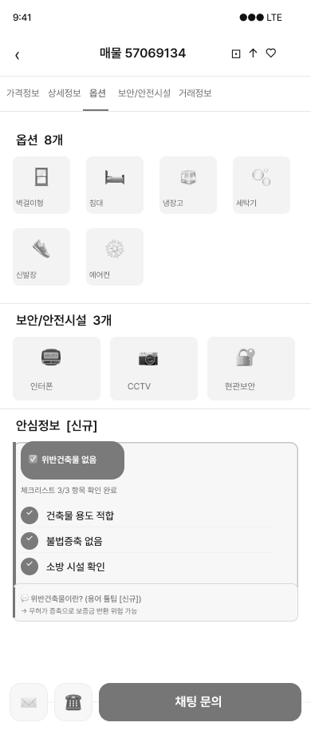
9:41
변경 영역 발췌 · 예시 데이터
‹
매물 57069134
가격정보
상세정보
옵션
안심정보
거래정보
안심 정보 · 확인 상태
위반건축물
기록 없음 · 확인 완료
확인 서류
건축물대장
확인 주체
다방 담당자 (문서 대조)
확인일
2026.10.05 (예시)
확인 범위
대장에 기재된 사항만
불법증축 여부
확인 자료 없음
확인 서류
없음
추가 확인
방문 시 구조 확인 · 중개사 문의
소방시설
서류 미제출
확인 서류
소방 점검서류 미제출
추가 확인
중개사에게 서류 요청
건축물대장에는 적발된 위반건축물만 기록됩니다. "기록 없음"은 문제가 없다는 보증이 아닙니다.
☎
채팅 문의
BEFORE
AFTER
1차 시안 (S6) · "위반건축물 없음" 체크리스트
수정 · 점수 삭제, 확인 주체·일자·범위 표기 (변경 영역 발췌 · 예시 데이터)
UX PORTFOLIO — DABANG — 문건호
07 · KEY SCENE 03
SCENE 03
첫 문의
1차 시안 → 수정 시안
왜 바꿨나 — 첫 문의 작성 부담이 있을 것으로 가정해, 보내고 싶은 질문을 바로 고르게 한다.
1차 시안의 문제
채팅 CTA는 있지만 빈 입력창에서 시작한다. 첫 문의 작성 부담이 있을 것으로 가정해 질문 템플릿을 제안했다. 이 부담은 현재 수치만으로는 확인되지 않아 테스트에서 확인한다.
조사 근거
인앱 채팅 선택 46.2%(6/13) · 전화 선택 7.7%(1/13) · 전화 부담 46.2%(Q6). n=13. 이 수치는 연락 수단 선호까지만 보여준다.
수정 화면
채팅창에 확인 질문 3개(사진·서류·방문)를 제안한다. 질문을 고르면 입력창에 들어가고, 고친 뒤 보낼 수 있다. 전화는 보조 아이콘(☎)으로 유지.
검증할 내용
첫 문의 작성이 쉬워졌는지(작성 시간·완료 여부)와 K1 첫 문의 전송 비율을 1차 시안·수정 시안 동일 과제로 비교. 서비스 전환율은 운영 데이터 접근 시 별도 측정.
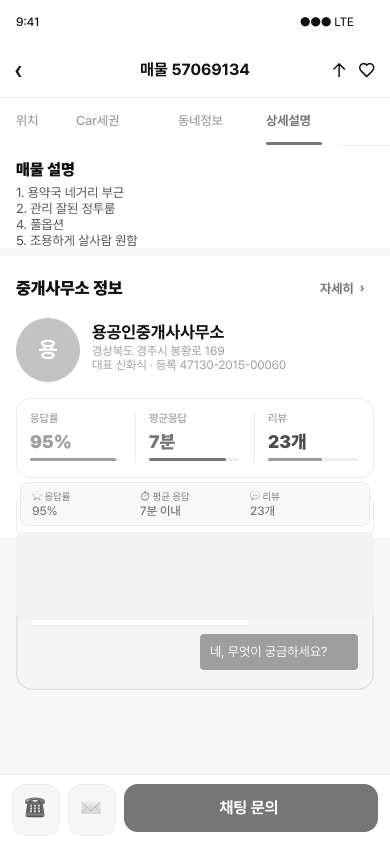
9:41
예시 데이터
‹
용공인중개사사무소
☎
평균 응답 7분 (최근 30일 기준, 예시)
무엇을 확인하고 싶으세요?
최근에 촬영한 방 사진을 더 볼 수 있나요?
위반건축물 확인 서류를 볼 수 있나요?
방문 가능한 시간이 언제인가요?
직접 입력하거나 질문을 선택하세요
보내기
BEFORE
AFTER
1차 시안 (S9) · 채팅 문의 CTA + 전화 보조
수정 · 질문 템플릿 제안 (흐름은 아래 5단계 · 예시 데이터)
UX PORTFOLIO — DABANG — 문건호
07 · FIRST MESSAGE
FIRST
MESSAGE.
첫 문의 흐름 — 질문 선택 → 입력창 반영 → 수정 → 보내기 → 전송 완료
장면 03 · 예시 데이터
① 질문 선택
① 질문 선택
9:41
예시 데이터
‹
용공인중개사사무소
☎
평균 응답 7분 (최근 30일 기준, 예시)
무엇을 확인하고 싶으세요?
최근에 촬영한 방 사진을 더 볼 수 있나요?
위반건축물 확인 서류를 볼 수 있나요?
방문 가능한 시간이 언제인가요?
직접 입력하거나 질문을 선택하세요
보내기
② 입력창 반영
② 입력창 반영
9:41
예시 데이터
‹
용공인중개사사무소
☎
평균 응답 7분 (최근 30일 기준, 예시)
무엇을 확인하고 싶으세요?
최근에 촬영한 방 사진을 더 볼 수 있나요?
위반건축물 확인 서류를 볼 수 있나요?
방문 가능한 시간이 언제인가요?
위반건축물 확인 서류를 볼 수 있나요?
보내기
③ 직접 수정
③ 직접 수정
9:41
예시 데이터
‹
용공인중개사사무소
☎
평균 응답 7분 (최근 30일 기준, 예시)
무엇을 확인하고 싶으세요?
최근에 촬영한 방 사진을 더 볼 수 있나요?
위반건축물 확인 서류를 볼 수 있나요?
방문 가능한 시간이 언제인가요?
위반건축물 확인 서류를 볼 수 있나요? 토요일 오후에 방문하려고 해요.|
보내기
④ 보내기
④ 보내기
9:41
예시 데이터
‹
용공인중개사사무소
☎
평균 응답 7분 (최근 30일 기준, 예시)
무엇을 확인하고 싶으세요?
최근에 촬영한 방 사진을 더 볼 수 있나요?
위반건축물 확인 서류를 볼 수 있나요?
방문 가능한 시간이 언제인가요?
위반건축물 확인 서류를 볼 수 있나요? 토요일 오후에 방문하려고 해요.
전송 중…
⑤ 전송 완료
⑤ 전송 완료
9:41
예시 데이터
‹
용공인중개사사무소
☎
평균 응답 7분 (최근 30일 기준, 예시)
위반건축물 확인 서류를 볼 수 있나요? 토요일 오후에 방문하려고 해요.
전송됨 · 중개사 응답 대기
메시지 입력
보내기
NEXT
→ 08 UI 디자인: 수정한 화면과 유지한 화면을 같은 시스템 안에서 정리한다.
UX PORTFOLIO — DABANG — 문건호
08 · DESIGN SYSTEM
DESIGN
SYSTEM.
신뢰를 화면에서
보이게 만들다
KPI 가설을 11개 화면에 반영한 To-Be UI. 신뢰 정보는 연락 직전이 아니라 탐색 첫 화면부터 보이도록 배치했다.
01
신뢰 정보 우선 노출
안심 정보·응답률·사진 출처를 카드와 상세 상단에 노출. 연락 직전이 아닌 탐색 단계부터 판단 근거를 제공. 확인 주체·일자·범위 표기는 07 대표 장면에서 수정
02
48PX 터치 통일
버튼·칩·아이콘 버튼 높이를 48px로 통일. 모바일에서 오탭을 줄이고 CTA를 일관되게 인식
03
채팅 우선 CTA
연락 CTA를 "채팅 문의"로 격상하고 전화는 보조 아이콘으로 하향. 인앱 채팅 선호 46.2%와 전화 부담 응답을 반영
COLOR
PRIMARY
#326CF9
액션·선택
BLUE 50
#EBF0FF
선택 배경
GREEN
#1CA885
안심·인증
ORANGE
#FF9727
주의·지도핀
INK
#14171F
텍스트
TYPE
다방에서 원룸 찾기
H1 32 / BOLD
다방에서 원룸 찾기
H3 20 / BOLD
다방에서 원룸 찾기
BODY 16 / REGULAR
다방에서 원룸 찾기
CAPTION 12 / REGULAR
COMPONENTS
채팅 문의
☎
원/투룸
안심인증 ✓
가격 ▾
BTN/CTA · ICONBTN · CHIP/FILTER — H48 · RADIUS 14/24
BOTTOMNAV 5 VARIANTS · STATUSBAR · CARD
UX PORTFOLIO — DABANG — 문건호
08 · EXPLORE & FILTER
EXPLORE
& FILTER.
PP03 탐색 효율
탐색 · 필터
필터와 지도로 처음부터 조건에 맞는 매물만. 카드 단계에서 신뢰지표가 보이도록 설계.
9:41
예시 데이터
다방
어떤 방을 찾으세요?
원/투룸 ▾
아파트
주택/빌라
오피스텔
서류 1개 이상 확인 매물만 보기
확인 서류·주체·범위는 상세에서 확인
이 조건에 맞는 방
더보기
서류 확인 n/3 = 건축물대장·보증보험·소방 점검서류 중 다방이 확인한 수
중개사 제출
월세 300/50
시세 -8%
깔끔한 정투룸 · 39.66㎡ · 고층
서류 확인 2/3
응답률 95%
중개사 제출
월세 280/45
시세 -12%
채광 좋은 신축 원룸 · 24.8㎡ · 2층
서류 확인 1/3
응답률 95%
월세 300/50
홈
관심목록
알림
우리동네
더보기
S1
01
S1 홈 (수정 시안 · 핵심 영역)
서류 확인 배너 · 확인 상태 카드 · 지도 미리보기 (핵심 영역 발췌 · 예시 데이터)
9:41
예시 데이터
‹
성건동 · 원/투룸 · 전월세
서류 1개 이상 확인 ✓
거래유형 ∨
가격 ∨
서류 1개 이상 확인 매물 21개
서류 확인 n/3 = 건축물대장·보증보험·소방 점검서류 중 다방이 확인한 수
중개사 제출
월세 300/50
시세 -8%
깔끔한 정투룸 · 39.66㎡ · 고층
서류 확인 2/3
응답률 95%
중개사 제출
월세 280/45
시세 -12%
채광 좋은 신축 원룸 · 24.8㎡ · 2층
서류 확인 1/3
응답률 95%
중개사 제출
월세 260/40
시세 -15%
역 도보 5분 · 20.4㎡ · 3층
서류 확인 3/3
응답률 95%
홈
관심목록
알림
우리동네
더보기
S2
02
S2 매물 리스트
"서류 1개 이상 확인" 필터 결과만 노출. 서류 확인 n/3 = 건축물대장·보증보험·소방 점검서류 중 다방이 확인한 수. 응답률은 최근 30일, 시세는 같은 동 평균 월세 대비(가정 · 예시 데이터)
9:41
예시 데이터
200/35
300/50
250/40
260/40
이 지역 매물 23개
최신순
가격낮은순
면적순
서류 확인 n/3 = 건축물대장·보증보험·소방 점검서류 중 다방이 확인한 수
중개사 제출
월세 300/50
시세 -8%
깔끔한 정투룸 · 39.66㎡ · 고층
서류 확인 2/3
응답률 95%
중개사 제출
월세 280/45
시세 -12%
채광 좋은 신축 원룸 · 24.8㎡ · 2층
서류 확인 1/3
응답률 95%
매물 목록 전체보기 →
홈
관심목록
알림
우리동네
더보기
S10
03
S10 지도 검색
가격핀 + 바텀시트 카드. 서류 확인 n/3은 S2와 같은 기준 (예시 데이터)
UX PORTFOLIO — DABANG — 문건호
08 · LISTING TRUST
LISTING
TRUST.
PP01 매물 정보 신뢰 부족 · 1순위
매물 정보 신뢰
제출된 사진의 출처·검증 상태와 시세 비교로 "믿을 수 있는지"를 상세 화면에서 바로 판단.
9:41
변경 영역 발췌 · 예시 데이터
‹
매물 57069134
가격정보
상세정보
옵션
안심정보
거래정보
제출된 사진 · 다방 검증 전
월세 300/50
깔끔한 정투룸 · 39.66㎡ · 고층 · 관리비 8만원
사진 확인 정보
제출자
중개사 (용공인중개사사무소)
검증 상태
다방 검증 전
제공 사진 범위
거실·주방·욕실 3컷
제출일
2026.10.02 (예시)
추가 확인 필요
광각·보정 여부는 방문 시 확인
제출된 사진은 중개사가 제공한 자료이며, 앱이 실제 상태를 보증하지 않습니다.
☎
채팅 문의
S3
01
S3 매물 상세 (수정 시안)
"제출된 사진" 표기 · 제출자·검증 상태·제공 사진 범위 · 추가 확인 필요 (변경 영역 발췌, 나머지는 1차 시안 유지)
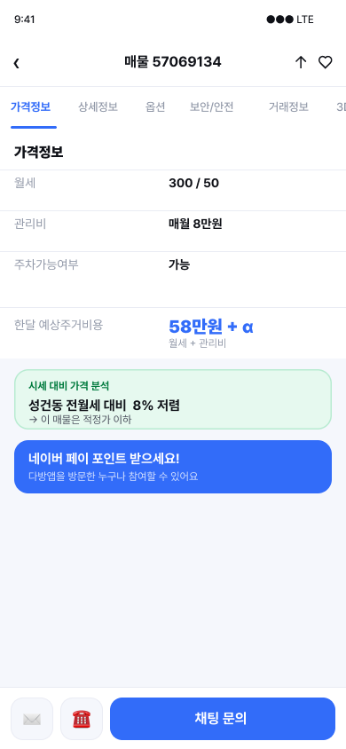
S4
02
S4 가격 정보
월세·관리비·예상 비용을 한 번에. 전세 대비 시세 비교 인사이트 박스
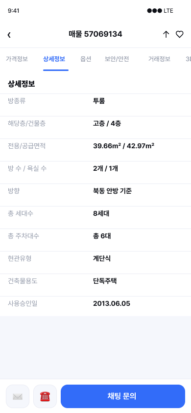
S5
03
S5 상세 정보
면적·층수·방향 등 기본 정보를 표로 정리, 탭 구조 유지
UX PORTFOLIO — DABANG — 문건호
08 · SAFETY INFO
SAFETY
INFO.
PP02 위반건축물 정보 부재 · 2순위
안심 정보
우회하던 확인 행동을 앱 안으로. 확인 상태·거래정보·3D 투어로 방문 전 확인.
9:41
변경 영역 발췌 · 예시 데이터
‹
매물 57069134
가격정보
상세정보
옵션
안심정보
거래정보
안심 정보 · 확인 상태
위반건축물
기록 없음 · 확인 완료
확인 서류
건축물대장
확인 주체
다방 담당자 (문서 대조)
확인일
2026.10.05 (예시)
확인 범위
대장에 기재된 사항만
불법증축 여부
확인 자료 없음
확인 서류
없음
추가 확인
방문 시 구조 확인 · 중개사 문의
소방시설
서류 미제출
확인 서류
소방 점검서류 미제출
추가 확인
중개사에게 서류 요청
건축물대장에는 적발된 위반건축물만 기록됩니다. "기록 없음"은 문제가 없다는 보증이 아닙니다.
☎
채팅 문의
S6
01
S6 안심정보 확인 상태 (수정 시안)
항목별 확인 서류·주체·일자·범위·추가 확인 필요 (변경 영역 발췌 · 예시 데이터)
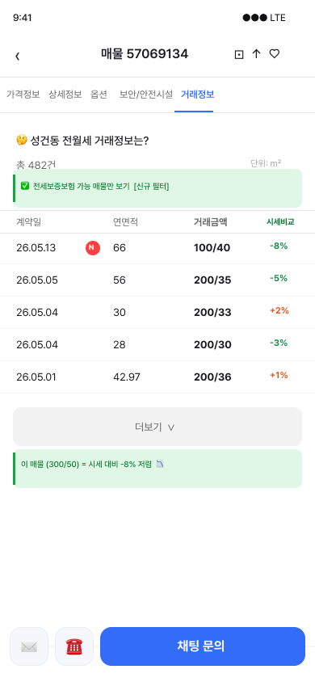
S7
02
S7 거래 정보
전세보증보험 가능 여부 · 실거래 이력과 이 매물 비교 콜아웃
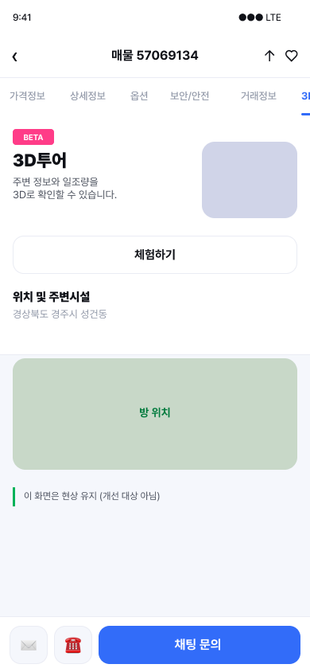
S8
03
S8 3D 투어
방문 전 3D 투어 체험 + 위치·주변 시설 확인으로 헛걸음 감소
UX PORTFOLIO — DABANG — 문건호
08 · CONTACT & STATE
CONTACT
& STATE.
연락 허들 · 막다른 길 방지
연락 · 상태
중개사 신뢰 정보는 보조로, 연락은 채팅 우선. 결과가 없을 때도 다음 행동을 제시.
S9
01
S9 중개사 정보
응답률 95% · 평균 응답 7분 · 활동 이력 시각화, 인앱 채팅 CTA
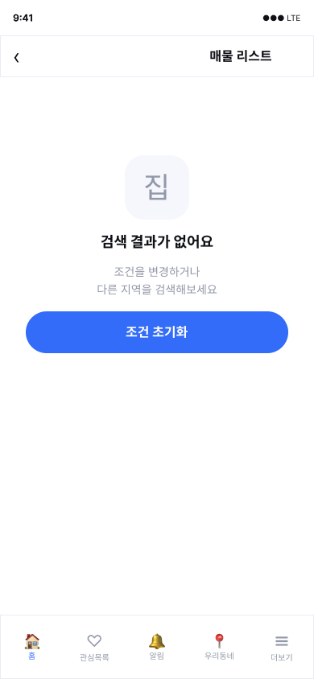
S11
02
S11 Empty State
결과 없음 안내 + "조건 초기화" CTA로 막다른 길 방지
9:41
예시 데이터
‹
용공인중개사사무소
☎
평균 응답 7분 (최근 30일 기준, 예시)
무엇을 확인하고 싶으세요?
최근에 촬영한 방 사진을 더 볼 수 있나요?
위반건축물 확인 서류를 볼 수 있나요?
방문 가능한 시간이 언제인가요?
직접 입력하거나 질문을 선택하세요
보내기
S9-2
03
S9-2 채팅 문의 (수정 시안)
질문 선택 → 입력창 반영 → 수정 → 보내기 → 전송 완료 (흐름은 07). 첫 문의 작성 부담은 가정이며 테스트로 확인 예정
NEXT
→ 09 화면 전환 흐름: 화면이 어떤 동작으로 서로 이어지는지 한 장에 모은다.
UX PORTFOLIO — DABANG — 문건호
09 · SCREEN FLOW
SCREEN FLOW.
● 검은 점 = 다음 화면으로 넘어가는 트리거(탭·버튼)의 위치. 화살표 위 라벨 = 어떤 동작으로 넘어가는지. 수정 시안으로 교체한 화면은 S1·S2·S3·S6·S10이고(S3·S6은 변경 영역 발췌), S9-2는 새로 추가한 채팅 문의 화면이다.
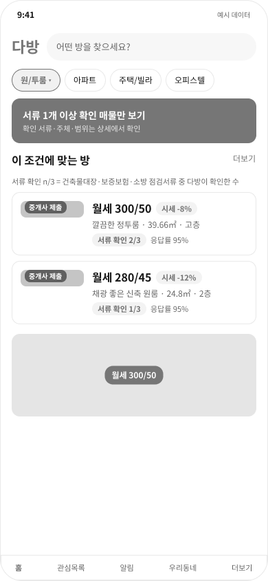
S1 HOME
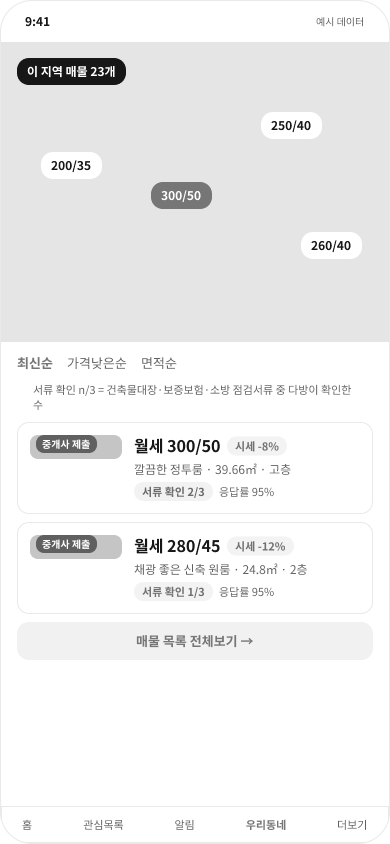
S10 MAP
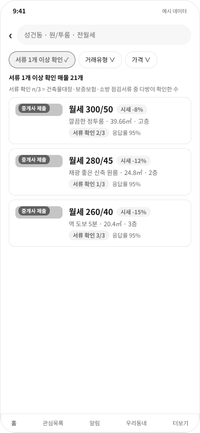
S2 LISTING
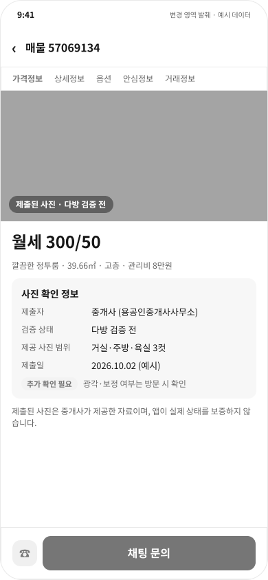
S3 DETAIL
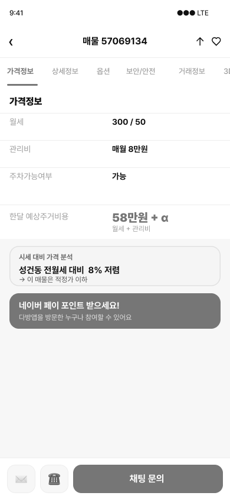
S4 PRICE
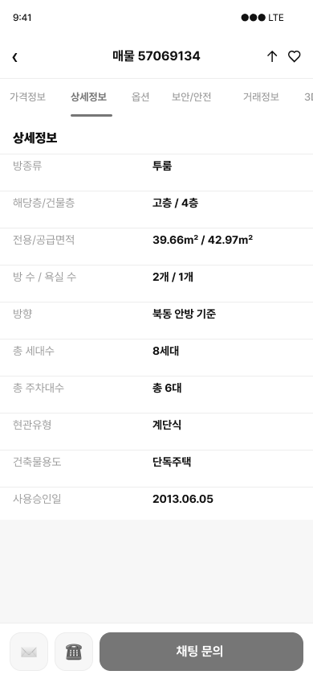
S5 INFO
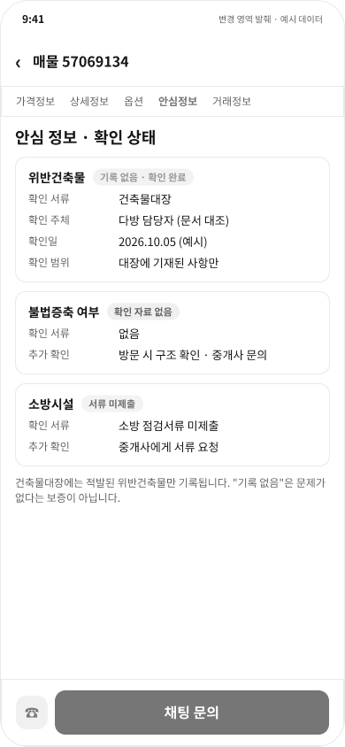
S6 SAFETY
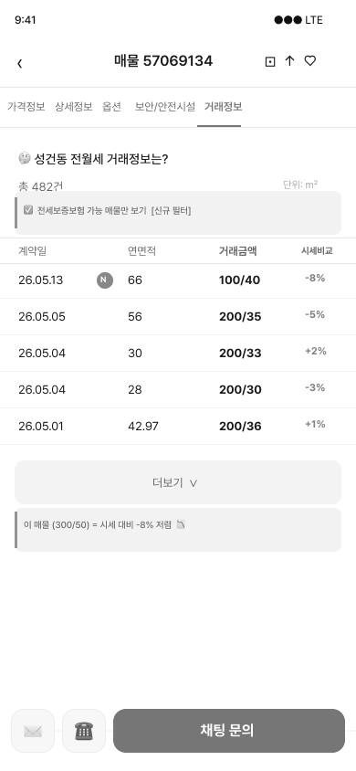
S7 DEALS
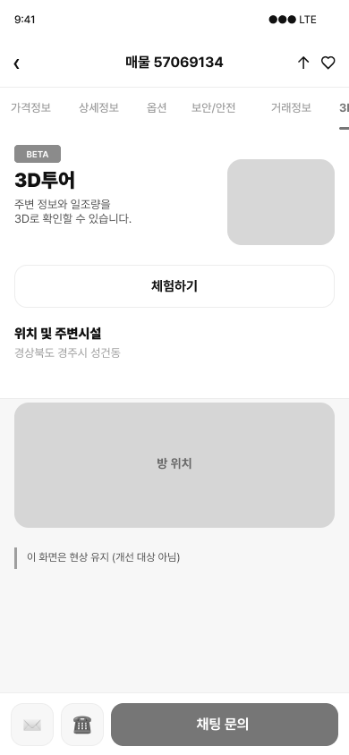
S8 3D
S9 AGENT
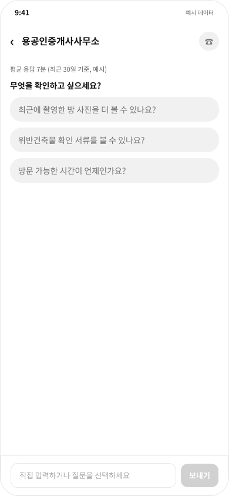
S9-2 CHAT
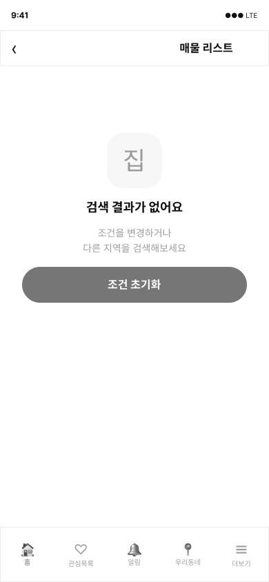
S11 EMPTY
지도 미리보기
1
목록 전체보기
2
매물 카드
3
가격정보 탭
4
상세정보 탭
5
옵션 탭
6
거래정보 탭
7
3D투어 탭
8
다음 탭
9
채팅 문의 탭
10
전환 목록
1 S1 → S10 · 지도 미리보기 탭
2 S10 → S2 · 매물 목록 전체보기
3 S2 → S3 · 매물 카드 탭
4 S3 → S4 · 가격정보 탭
5 S4 → S5 · 상세정보 탭
6 S5 → S6 · 옵션 탭
7 S6 → S7 · 거래정보 탭
8 S7 → S8 · 3D투어 탭
9 S8 → S9 · 다음 탭 (중개사)
10 S9 → S9-2 · 채팅 문의 탭 (질문 선택 → 입력창 반영 → 수정 → 보내기 → 전송 완료)
※ S2 필터 결과가 0건이면 S11 Empty State로 이동하고, "조건 초기화" 탭 시 S2로 복귀한다.
01 · 탐색 (S1 → S10 → S2)
지도로 훑고, 목록으로 좁힌다
홈에서 지도 미리보기로 매물 분포를 먼저 보고, 목록 전체보기로 조건에 맞는 매물을 비교한다. 필터 결과가 0건이면 S11 Empty State로 가고, 조건 초기화로 돌아온다.
02 · 판단 (S3 → S8)
정보 탭을 따라 믿을 근거를 모은다
매물 카드를 열면 가격·상세·옵션·안심 정보·거래정보·3D투어 탭이 이어진다. 사진을 믿기 어렵다는 불편에 맞춰 서류 확인 상태(S3·S6)를 앞쪽에서 바로 보이게 바꿨다.
03 · 행동 (S9 → S9-2)
중개사에게 부담 없이 첫 문의를 보낸다
중개사 정보를 확인한 뒤 채팅 문의로 이동한다. 추천 질문을 고르면 입력창에 반영되고, 수정해서 보내면 전송이 끝난다. 전화 대신 선택할 수 있는 새 화면(S9-2)이다.
NEXT
→ 10 개발 & 배포: 1차 시안(v6)을 실제로 동작하는 프로토타입으로 만들어 배포했다.
UX PORTFOLIO — DABANG — 문건호
10 · DEV & DEPLOY
DEV &
DEPLOY.
Figma v6를 HTML 프로토타입으로 구현해 GitHub·Vercel로 배포했다. 배포된 것은 1차 시안(v6)이며, 07·08의 수정 시안(서류 확인 상태·채팅 질문 템플릿)은 Figma 단계로 아직 구현·배포 전이다.
01
FIGMA V6
To-be 11개 화면 · 컬러/타이포 토큰
02
HTML
index.html 단일 파일 (약 88KB) · CSS 변수 기반 컬러 토큰
03
GIT PUSH
로컬 → GitHub 원격 저장소 treny0930-a11y/dabang-v6
04
VERCEL
GitHub 저장소 연결 · 정적 사이트로 호스팅
05
LIVE URL
dabang-v6-qrju.vercel.app · 브라우저·모바일 어디서나 접속
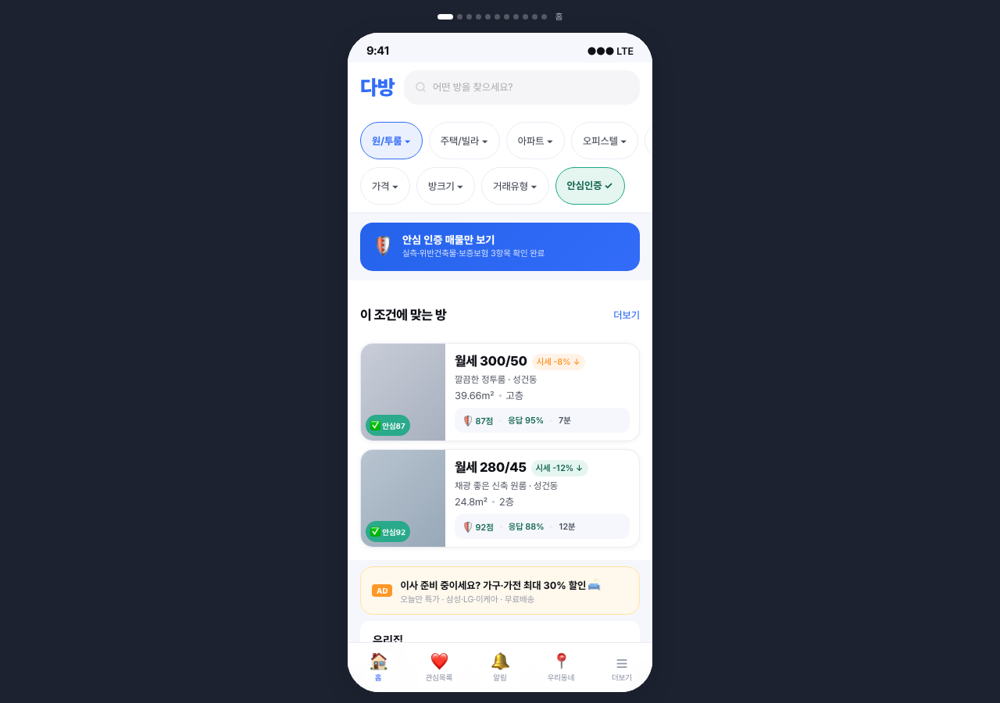
LIVE · HTTP 200 · PUBLIC REPO — 배포된 라이브 화면 (데스크탑, 폰 목업 프레임)
COMMITS
0d98d2e
2026-07-01
fix: 100% width 프로토타입 룰을 모바일 미디어쿼리로 스코프
데스크탑은 390×844 폰 목업, 768px 이하 모바일은 풀스크린으로 분기
0858a73
2026-06-29
initial: 다방 To-be v6 최종 프로토타입
S1~S11 화면과 필터·탭 인터랙션 최초 배포
URL
dabang-v6-qrju.vercel.app
Repository
github.com/treny0930-a11y/dabang-v6
구성
단일 HTML · 프레임워크 없는 순수 HTML/CSS/JS (폰트만 Pretendard CDN)
반응형
데스크탑 폰 목업 / ≤768px 풀스크린
작업 관리
GitHub Projects 보드 "다방 To-be v6"
NEXT
→ 11 정리: 확인한 것과 아직 모르는 것을 나눠 적고, 다음 검증으로 닫는다.
UX PORTFOLIO — DABANG — 문건호
11 · WRAP-UP
WRAP-UP.
확인한 것, 아직 모르는 것, 다음 검증
01
확인한 것
• 설문 13명 표본에서 사진 신뢰(76.9%)·위반건축물 불안(61.5%)이 가장 많이 선택된 불편
• 응답자 모두 연락 포기 경험이 있음
• 연락 수단은 인앱 채팅 선택 46.2%, 전화 선택 7.7%
02
아직 모르는 것
• 수정 시안이 확인·미확인 상태의 이해를 돕는지, 과신을 줄이는지
• 질문 템플릿이 첫 문의 작성을 쉽게 하는지
• 13명 표본의 경향이 전체 사용자에게도 맞는지
• 실제 서비스의 전환율 변화
03
다음 검증
• 06의 사용성 테스트 3종 실시 후 시안 수정
• 운영 데이터 접근 시 K1 첫 문의 전송 비율 측정
• 설문 표본 확대와 모집·조사 기간 기록
UX PORTFOLIO — DABANG — 문건호
CONTACT US
THANK
YOU.
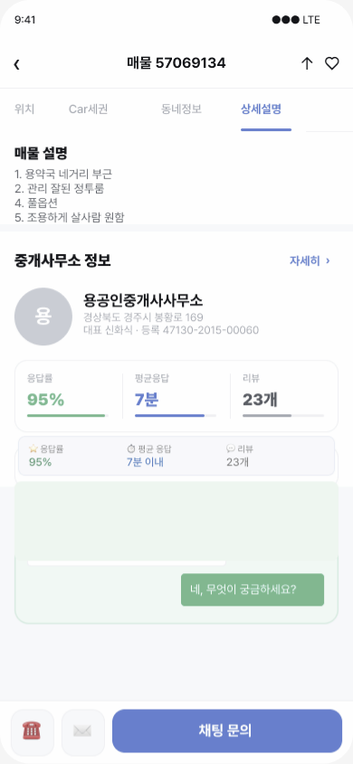
다방 원룸 탐색 UX 개선
문건호 · UX 분석 / UI 디자인 · 개인 리디자인 프로젝트 (다방과 무관한 비공식 UX 개선안)
LIVE dabang-v6-qrju.vercel.app
GITHUB treny0930-a11y/dabang-v6